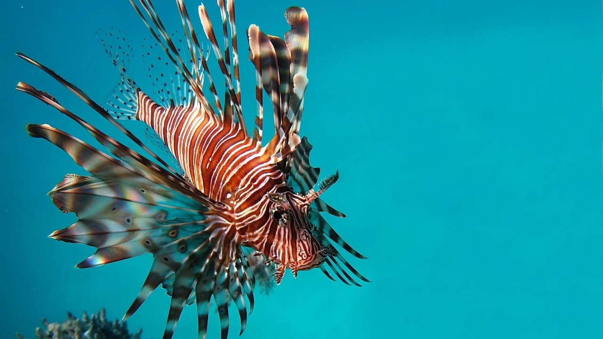
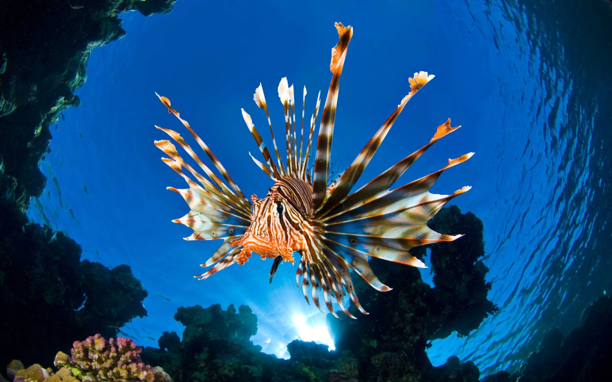
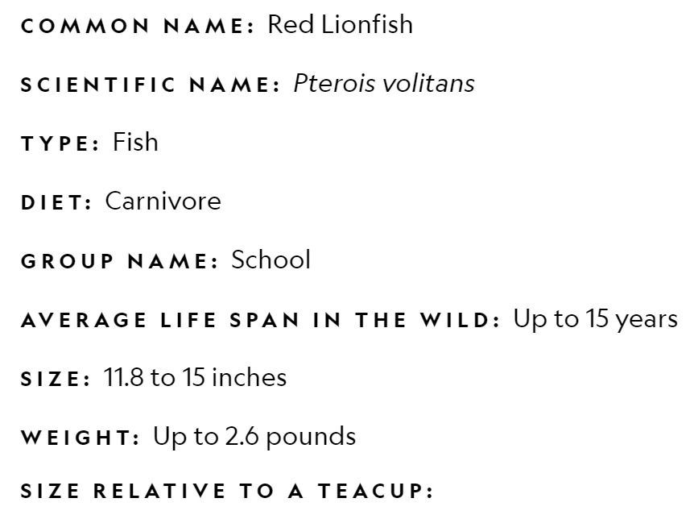
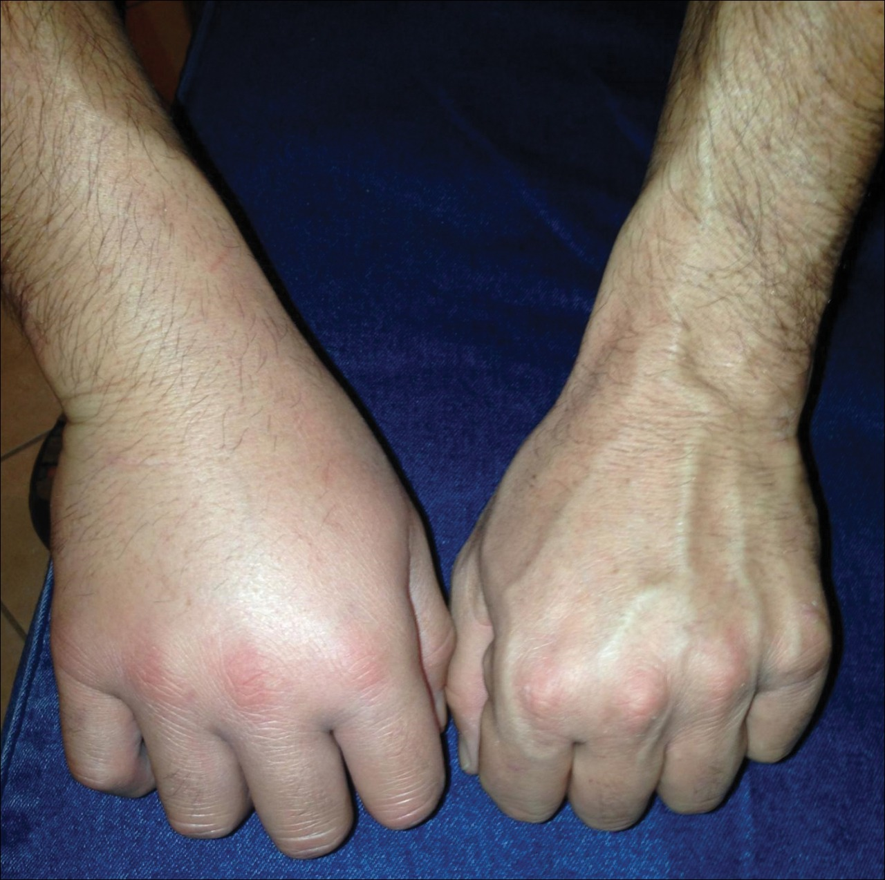

Pterois is a genus of venomous marine fish, commonly known as lionfish, native to the Indo-Pacific. Also called zebrafish, firefish, turkeyfish, tastyfish or butterfly-cod, it is characterized by conspicuous warning coloration with red, white, creamy, or black bands, showy pectoral fins, and venomous spiky fin rays. Pterois radiata, Pterois volitans, and Pterois miles are the most commonly studied species in the genus. Pterois species are popular aquarium fish. P. volitans and P. miles are recent and significant invasive species in the west Atlantic, Caribbean Sea and Mediterranean Sea. Pterois are harmful to humans. Juvenile lionfish have a unique tentacle located above their eye sockets that varies in phenotype between species. The evolution of this tentacle is suggested to serve to continually attract new prey; studies also suggest it plays a role in sexual selection.
Red lionfish are native to the reefs and rocky crevices of the Indo-Pacific, although they've found their way to warm ocean habitats worldwide. The largest of lionfish can grow to about 15 inches in length, but the average is closer to 1 foot. Red lionfish are popular in some parts of the world as food, but are far more prized in the aquarium trade. Their population numbers are healthy and their distribution is growing, causing some concerned in the United States, where some feel the success of this non-indigenous species presents human and environmental dangers.
These beautiful fish feed primarily on small fish, mollusks, and invertebrates. They feed at night and in the early morning, and swallow their prey whole. They have also been known to occasionally cannibalize smaller members of their own species.
The venom of the red lionfish, delivered via an array of up to 18 needle-like dorsal fins, is purely defensive. It relies on camouflage and lightning-fast reflexes to capture prey, mainly fish and shrimp. A sting from a lionfish is extremely painful to humans and can cause nausea and breathing difficulties, but is rarely fatal.
When the venom penetrates in human skin from spine penetrates of Lionfish